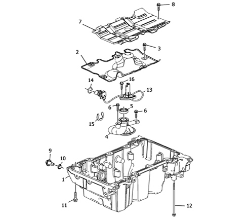

INTRODUCTION - CRANKCASE SUMP AND COVERS
- Path
- Descriptions > 10 ENGINE > 1020 CRANKCASE SUMP AND COVERS > INTRODUCTION - CRANKCASE SUMP AND COVERS
- Kind
- system description
- Applies to
- engines: 3.2 JTS; all production periods
- Interactive page
- https://sloeber94.github.io/elrnDB-aBrrSpdr/en/#/946001164
Applies to: engines: 3.2 JTS; all production periods
Technical specifications
It is a structural part of the engine with mechanical functions in addition to containing the engine oil because it is directly connected to the rear drive idler casing and to the two lower reaction links.
The oil sump is made from aluminium alloy with obvious advantages in terms of reduction in weight and heat exchange.
The oil sump incorporates the draught, the anti-splash partition and the oil level sensor; the draught is matched to the lower part of the crankcase with an o-ring seal.

1. Oil sump
2. Anti-splash partition
3. Anti-splash partition bolts
4. Oil pump draught
5. Oil pump draught seal
6. Oil pump draught seal bolts
7. Partition with slits
8. Partition with slits bolts
9. Oil drain plug
10. Oil drain plug washer
11. Oil sump short bolts
12. Oil sump long bolts
13. Oil level sensor
14. Oil level sensor o-ring
15. Oil level sensor connection retaining clip
16. Oil level sensor bolt
Oil seals on crankshaft
The front crankshaft seal takes the form of an oil seal fitted on the front engine cover.
The rear crankshaft seal takes the form of an oil seal incorporated in the rear engine cover.